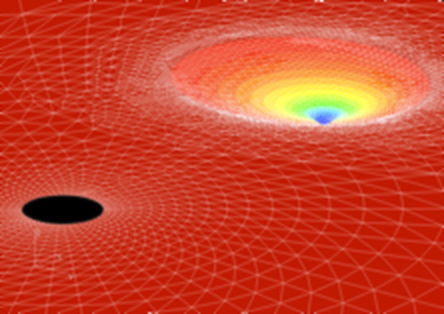
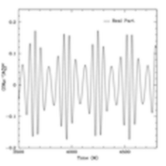
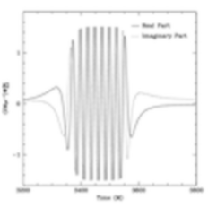

Carlos F. Sopuerta
Tenured Scientific Researcher, Institute of Space Sciences (ICE, CSIC & IEEC)
Gravitational physics and gravitational-wave astronomy, with a focus on the science of LISA — the future space-based gravitational-wave observatory.
About Me
Hello! I am a researcher working at the Institute of Space Sciences (ICE, CSIC & IEEC) since September 2007 (when I started as a Ramón y Cajal Fellow). I am currently a Tenured Scientific Researcher (Investigador Científico). My main research interests are in the area of Gravitational Physics with focus in the new area of Gravitational Wave Astronomy. I am very interested in the science of the future Laser Interferometer Space Antenna (LISA), an ESA-led mission that will detect gravitational radiation from low-frequency sources like massive black hole mergers, inspiraling stellar compact objects into massive black holes, ultra-compact galactic binaries, etc. LISA is currently in the implementation phase with launch expected in 2035. If you are interested in LISA Science join the LISA Consortium.
To commemorate the tenth anniversary of the first detection of gravitational waves (15.09.2015), ICE has prepared an interactive report (authored by Aitana C. Bonfill) on the LISA mission, covering all the most important aspects. It can be found at the following LINK (in Spanish).
Gravitational Wave Astronomy was born in September 14th, 2015 after the first detection of gravitational waves, from a colliding black hole binary, by the Laser Interferometer Gravitational-wave Observatory (LIGO). Together with Virgo and KAGRA they are observing many compact binary systems with black holes and neutron stars. On the other hand, other projects are trying to open other gravitational-wave windows: Pulsar Timing Arrays, CMB polatization detectors, etc. New revolutionary discoveries in Astrophysics, Cosmology, and Fundamental Physics are around the corner. It is now a great time to get involved in Gravitational Wave research!
In Spain, Gravitational Wave Astronomy is growing and more and more institutes and reseach groups are devoting attention to it. There is a collaborative network, REDONGRA (Spanish Network of Gravitational Wave Physics), which involves the different Spanish research groups advancing all the aspects of Gravitational Wave Astronomy: Theory, data analysis, detector technology, simulations, etc. If you would like to be updated about the activities of the network please subscribe to the REDONGRA mailing list HERE.



Publications
News & events
Contact
Address
Institute of Space Sciences (ICE, CSIC & IEEC)
Campus UAB, Carrer de Can Magrans s/n
08193 Bellaterra, Barcelona, Spain
Phone
+34 93 737 9788 (ext. 933021)
- carlos.f.sopuerta@csic.es (CSIC)
- sopuerta@ice.csic.es (ICE‑CSIC)
- sopuerta@ieec.cat (IEEC)